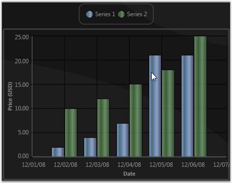

Chart for WPF lets you to "highlight" all the data points in a series when you move the mouse over any one of the data points in the series, or over the legend items corresponding to a Chart Series. This is achieved by binding the ChartSeries.Interior to the ChartSeries.Highlighted dependency property, such that all the data point segments in the series will get "highlighted" when this property changes.
The following code example illustrates this.
|
[XAML]
<!--Include this in the Window's Resources section.--> <local:HighlightedToOpacityConverter x:Key="myOpcConverter"/>
<sfchart:ChartSeries Name="series1" Label="Series 1" Type="Column" DataSource="{StaticResource SeriesData1}" BindingPathX="Date" BindingPathsY="Y1"> <sfchart:ChartSeries.Interior> <!--Increasing the Opacity of the Interior when this series is highlighted.--> <LinearGradientBrush EndPoint="0,0.5" StartPoint="1,0.5" Opacity="{Binding ElementName=series1, Path=Highlighted, Converter={StaticResource myOpcConverter}}"> <GradientStop Color="#FF434865" Offset="0"/> <GradientStop Color="#FF7598BF" Offset="0.947"/> <GradientStop Color="#FF496B82" Offset="0.75"/> <GradientStop Color="#FF8DA4C7" Offset="0.365"/> </LinearGradientBrush> </sfchart:ChartSeries.Interior> </sfchart:ChartSeries> |
|
[C#]
public class HighlightedToOpacityConverter : IValueConverter { #region IValueConverter Members
public object Convert(object value, Type targetType, object parameter, System.Globalization.CultureInfo culture) { bool highlighted = (bool)value; if (highlighted) return 1; else return 0.65; }
public object ConvertBack(object value, Type targetType, object parameter, System.Globalization.CultureInfo culture) { throw new NotImplementedException(); } #endregion } |

Figure 103: Highlighting Series
A sample which demonstrates Series highlighting feature is available in the following sample installation path.
..My Documents\Syncfusion\EssentialStudio\<Version Number>\WPF\Chart.WPF\Samples\3.5\WindowsSamples\Chart Series\Series Highlight Demo
See Also
Populating Chart Series, Highlighting Data Points, Selecting Points